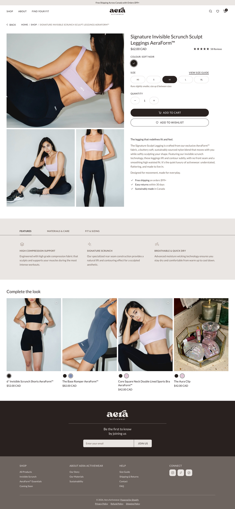
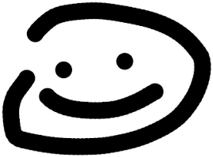
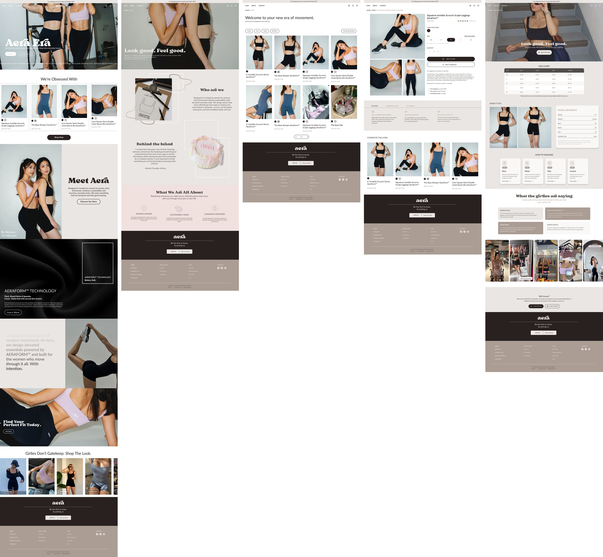
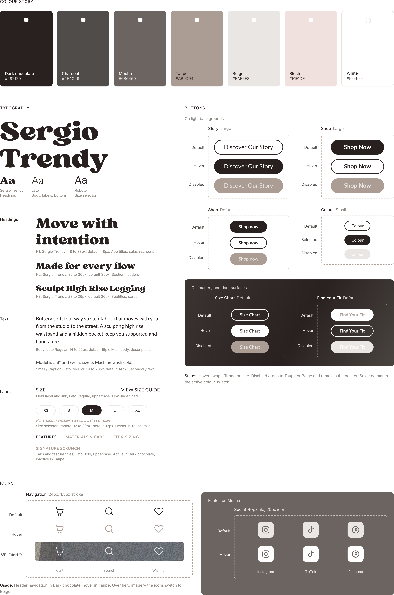

Aera
Activewear
In two nights at FLUI Design Jam ’26, I led the redesign of Aera Activewear’s website around the biggest reason customers hesitated to buy: sizing. The judges recognised the work, and I took it further on my own, building it as a five page Shopify store.

The brief
Aera Activewear wanted to create a more cohesive online presence through a redesigned landing page, improved website navigation and a consistent visual system across its digital experience.
At this stage, the priority was to strengthen brand awareness, encourage email sign ups and improve website engagement rather than focus solely on immediate sales.
The problem
The original three page website provided a starting point, but there was an opportunity to make the experience work harder for customers arriving primarily through Instagram and TikTok.
Product discovery was limited, brand storytelling lacked depth, and essential product information, particularly around AeraForm™ fabric and sizing, needed greater visibility.
For customers unfamiliar with the brand, this left important questions unanswered before making a purchase decision.
How might we transform Aera's existing website into a cohesive, brand led shopping experience that makes product discovery easier, communicates the value of AeraForm™ and helps customers feel more confident about fit?
Opportunities identified
The objective was to strengthen brand storytelling, simplify product discovery, make product and sizing information more accessible and establish a consistent visual system across the website.
No brand story
Customers needed a clearer understanding of who Aera was, what the brand stood for and what made it distinctive.
Limited product education
AeraForm™ fabric, a core product differentiator, needed a more prominent role in product communication.
Limited sizing guidance
Aera’s products ran smaller than standard sizing. Customers needed clearer fit information to make more informed decisions.
Limited product discovery
The existing three page website offered opportunities to improve navigation, collection organisation and product exploration.
Introduction
I began by understanding the brand, its intended audience and the existing digital experience.
I then reviewed seven activewear brands to identify useful approaches to product discovery, product education, brand storytelling and eCommerce presentation.
Interview
A nine question client interview helped clarify the business priorities, customer profile and areas where the website needed to evolve.
“The fit of it, the sizing of it.”
The client, on the question customers ask most before buying. Aera’s products run small.
The customer
Audience
Women aged 25 to 35 looking for elevated activewear that moves between everyday life, yoga, Pilates, walking and other low impact activities.
Brand feel
The client wanted Aera to feel feminine, approachable and conversational, elevated without being overly luxurious or pretentious.
Sizing concern
Aera’s products ran smaller than standard sizing, making accessible and prominent fit guidance an important design priority.
Competitor benchmarking
I reviewed seven established activewear brands, looking at navigation, collection structures, product presentation, visual identity, storytelling and product education. Here is what I took from each.
Cohesive collections and lifestyle led imagery.
Product education and activity based navigation.

Founder storytelling and brand credibility.
Sizing guidance and membership communication.
Collection organisation and shop by colour.
Inclusive sizing and fit guidance.
Editorial presentation and material storytelling.
Key insights
Fit decides the sale
Sizing was the question customers asked most before buying, and Aera’s products run small.
Story builds trust
The brands that stood out, like Dr. Mer’s Club and Aritzia, led with founder stories and materials.
Show the fabric
AeraForm™ was Aera’s point of difference, but the website barely explained it.
The research pointed to an opportunity beyond a visual refresh: create an experience where brand storytelling, product education and fit guidance worked together to make shopping feel more intuitive and informed.
View FigJam board ↗+ Click a screen to view it in detail

The design direction centred on Elevated Minimalism with Function. I wanted Aera to feel feminine, approachable and editorial while making the practical aspects of shopping, discovering products, understanding materials and choosing the right size, easier.
View Figma file ↗Design decisions
The result was a design approach that connected brand storytelling with a more structured and informative shopping journey.
Storytelling first
The homepage introduces Aera’s identity and directs customers towards the brand story through a “Discover Our Story” call to action, creating context before product exploration.
Sizing at every step
“Find Your Fit” on the homepage makes sizing a visible part of the journey. Product pages include a “View Size Guide” link and a reminder that Aera products run slightly smaller.
Conversational voice
The brand voice uses approachable, conversational language such as “Girlies Don’t Gatekeep”, alongside customer reviews and founder storytelling, to create a more personal experience.
AR try on concept
An exploratory concept allows customers to upload a photo to visualise how a product might look on their proportions. This remains a prototype concept, not a completed functional feature.
Design system

The high fidelity prototype brings the research and design direction together in a cohesive eCommerce experience.
The proposed journey combines brand storytelling, structured product discovery and more visible sizing guidance, helping customers understand both the product and the brand before making a purchase decision.
Explore the interactive prototype ↗The judges’ feedback highlighted opportunities to improve the experience further, particularly around accessibility, navigation clarity and the details of the shopping journey.
What judges praised
Brand storytelling
Conversational voice
Sizing guidance
FLUI Design Jam ’26
What to refine
Email pop up timing
The pop up appeared before customers had an opportunity to explore the experience. A delayed trigger, such as exit intent or a scroll threshold, could make the interaction feel less disruptive.
Navigation contrast
White navigation text over lighter hero imagery could reduce readability. A subtle background treatment or improved text contrast would help maintain legibility.
Body text contrast
The original body text colour (#AB9D94) did not provide sufficient contrast against white. A darker text colour such as #6B5D54 was identified as a potential improvement.
Filter selected states
Active filters needed clearer visual feedback. A filled selected state, a removal control and a “Clear all” option would make filtering easier to understand.
Product categories
A clearer category navigation row (All, Leggings, Shorts, Bras and Accessories) could help customers browse the collection more efficiently.
Post sizing flow
The size guide needed a clearer route back into shopping. A “Shop in your size” call to action could connect sizing guidance with relevant product discovery.
To take the design beyond the prototype, I built it as an independent, non commercial Shopify store for my portfolio, carrying across the information architecture, visual direction and shopping experience.
Passwordto enter the store: aera-activewear
NoteNot affiliated with Aera Activewear. Brand name, logo and photos belong to Aera Activewear, sourced from @aeraactivewear and the design brief (some sharpened with AI). Headings use Sergio Trendy by Kulokale Studio, personal use licence.
This project joined my apparel background with my growing practice in UX/UI design. Knowing garments, materials and fit helped me treat Aera as a product, and UX methods turned that knowledge into clearer interactions.
Two nights left little room for guesswork, so every decision came from the client interview and brand review. The judges’ notes on contrast and pop up timing showed me that readability and pacing build trust too.
Building the concept store in Shopify showed me how those decisions hold up on a real platform. Most of all, it reinforced that good eCommerce design helps people understand what they are buying and feel confident throughout the journey.